<!DOCTYPE html>

<html lang="en">
    <head>
        <meta charset="utf-8" />
        <meta name="viewport" content="width=device-width, initial-scale=1" />
        <title>Anchor's Home</title>

        <!-- Theme BEFORE paint (prevents flash) -->
        <script>
            (function () {
            var savedTheme = localStorage.getItem("theme") || "dark";
            document.documentElement.setAttribute("data-theme", savedTheme);
            })();
        </script>

        <!-- CSS -->
        <link rel="stylesheet" href="https://cdn.jsdelivr.net/npm/bootstrap@5.3.3/dist/css/bootstrap.min.css" />
        <link rel="stylesheet" href="https://cdnjs.cloudflare.com/ajax/libs/font-awesome/6.5.2/css/all.min.css" />
        <link rel="stylesheet" href="../../../style.css" />

        <!-- MathJax (always typeset the whole page) -->
        <script>
            window.MathJax = {
            loader: { load: ["[tex]/ams", "[tex]/color", "[tex]/textmacros"] },
            tex: {
                packages: { "[+]": ["ams", "color", "textmacros"] },
                inlineMath: [["\\(", "\\)"]],
                displayMath: [["\\[", "\\]"]],
                tags: "ams",
                processEscapes: true
            },
            options: {
                skipHtmlTags: ["script", "noscript", "style", "textarea", "pre", "code"]
            }
            };
        </script>
        <script defer src="https://cdn.jsdelivr.net/npm/mathjax@3/es5/tex-chtml-full.js"></script>

        <!-- Page helpers: theme toggle + TOC + scroll highlight + back-to-top -->
        <script>
            (function () {
            function applyTheme(mode) {
                document.documentElement.setAttribute("data-theme", mode);
                localStorage.setItem("theme", mode);
            }

            // Keep these because your header buttons call them
            window.__setLight = function () { applyTheme("light"); };
            window.__setDark  = function () { applyTheme("dark"); };

            document.addEventListener("DOMContentLoaded", () => {
                // MathJax: typeset whole document once
                if (window.MathJax) MathJax.typesetPromise();

                rebuildPageToc();
                observeHeadings();
                setupBackToTop();
            });

            function slugify(text) {
                return text.toLowerCase().trim()
                .replace(/[^a-z0-9\u4e00-\u9fa5\s-]/g, "")
                .replace(/\s+/g, "-")
                .replace(/-+/g, "-");
            }

            function ensureId(el) {
                if (!el.id) el.id = slugify(el.textContent);
                return el.id;
            }

            function rebuildPageToc() {
                const toc = document.querySelector("#pageToc");
                const scope = document.querySelector("main.content-wrap") || document.body;
                if (!toc) return;

                toc.innerHTML = "";
                const hs = Array.from(scope.querySelectorAll("h1, h2, h3"));
                hs.forEach(h => ensureId(h));

                const ul = document.createElement("ul");
                ul.className = "list-unstyled toc";

                hs.forEach(h => {
                const li = document.createElement("li");
                li.style.marginLeft = (h.tagName === "H1" ? 0 : h.tagName === "H2" ? 12 : 24) + "px";

                const a = document.createElement("a");
                a.href = "#" + h.id;
                a.textContent = h.textContent;

                li.appendChild(a);
                ul.appendChild(li);
                });

                toc.appendChild(ul);
            }

            function observeHeadings() {
                const headings = document.querySelectorAll(".content-wrap h1, .content-wrap h2, .content-wrap h3");
                if (!headings.length) return;

                const observer = new IntersectionObserver((entries) => {
                const links = Array.from(document.querySelectorAll(".toc a, .bd-sidenav a"));
                const map = new Map(links.map(a => [a.getAttribute("href"), a]));

                entries.forEach(entry => {
                    const id = "#" + entry.target.id;
                    const link = map.get(id);
                    if (!link) return;

                    if (entry.isIntersecting) link.classList.add("active");
                    else link.classList.remove("active");
                });
                }, { rootMargin: "0px 0px -70% 0px", threshold: 0.1 });

                headings.forEach(h => observer.observe(h));
            }

            function setupBackToTop() {
                const btn = document.getElementById("backToTop");
                if (!btn) return;

                window.addEventListener("scroll", () => {
                btn.style.display = (window.scrollY > 400) ? "block" : "none";
                });

                btn.addEventListener("click", () => {
                window.scrollTo({ top: 0, behavior: "smooth" });
                });
            }
            })();
        </script>
    </head>

    <body>
        <!--顶部-->
        <header class="page-header">
            <h1 class="doc-title m-0"><a class="nav-link" href="../../index.html">Anchor's Home</a></h1>

            <div class="d-flex align-items-center gap-1">
                <div class="btn-group me-1" role="group" aria-label="Theme">
                    <button class="btn-icon" type="button" onclick="__setLight()" title="Light mode" aria-label="Switch to light mode">
                        <i class="fa-solid fa-sun" aria-hidden="true"></i>
                    </button>
                    <button class="btn-icon" type="button" onclick="__setDark()" title="Dark mode" aria-label="Switch to dark mode">
                        <i class="fa-solid fa-moon" aria-hidden="true"></i>
                    </button>
                </div>
            </div>
        </header>

        <div class="layout">
            <!--侧边栏-->
            <aside class="sidebar-primary">
                <nav aria-label="Chapters" id="sideNav">
                    <!-- 英文列表 -->
                    <ul class="list-unstyled bd-sidenav nav-en">
                        <li><a class="nav-link" href="../../../index.html">Back to Homepage</a></li>
                        <li><a class="nav-link" href="../Small_Anchor.html">Small Anchor</a></li>
                    </ul>
                </nav>
            </aside>

            <!--主体内容-->
            <main class="content-wrap">
                <h1 id="n-th-roots-and-rational-exponents"><span
                class="math inline">\(n\)</span>-th roots and rational exponents</h1>
                <p>What is the meaning of (and why?):</p>
                <ul>
                <li><p><span class="math inline">\(2^3\)</span>:</p></li>
                <li><p><span class="math inline">\(2^0\)</span>:</p></li>
                <li><p><span class="math inline">\(2^{-2}\)</span>:</p></li>
                <li><p><span class="math inline">\(\sqrt{2}\)</span>:</p></li>
                </ul>
                <p>Next question, what is the meaing of <span
                class="math inline">\(\sqrt[3]{2}\)</span> and <span
                class="math inline">\(2^\frac{1}{3}\)</span>?</p>
                <div class="definition*">
                <p><strong>Definition 1</strong>. <strong>(<span
                class="math inline">\(n\)</span>-th roots and <span
                class="math inline">\(a^{1/n}\)</span>)</strong></p>
                <p>Let <span class="math inline">\(n\)</span> be a positive integer. If
                <span class="math display">\[b^n = a\]</span> Then we say that <span
                class="math inline">\(b\)</span> is an <span
                class="math inline">\(n\)</span>-th root of <span
                class="math inline">\(a\)</span>. Besides we have: <span
                class="math display">\[a^\frac{1}{n} = \sqrt[n]{a}\]</span></p>
                </div>
                <p><strong>Questions</strong>:</p>
                <ul>
                <li><p>if <span class="math inline">\(a^4 = 16\)</span>, <span
                class="math inline">\(a = ?\)</span></p></li>
                <li><p>if <span class="math inline">\(b^4 = -16\)</span>, <span
                class="math inline">\(b = ?\)</span></p></li>
                <li><p>if <span class="math inline">\(c^3 = 8\)</span>, <span
                class="math inline">\(c = ?\)</span></p></li>
                <li><p>if <span class="math inline">\(d^3 = -8\)</span>, <span
                class="math inline">\(d = ?\)</span></p></li>
                </ul>
                <p>Summary:</p>
                <figure data-latex-placement="h">
                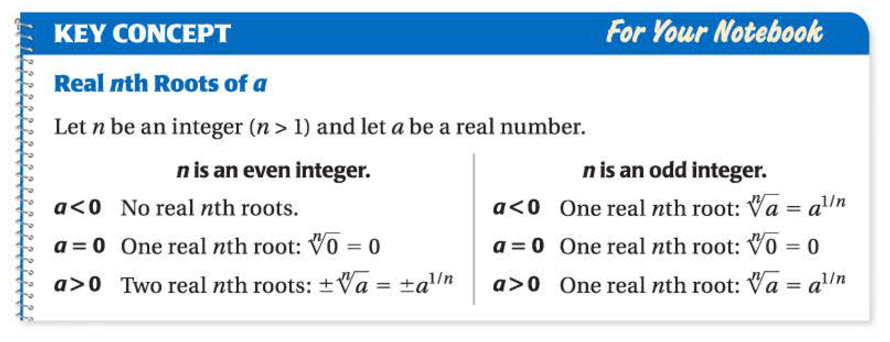
                </figure>
                <p>Notice that, when we write <span
                class="math inline">\(\sqrt[4]{16}\)</span> or <span
                class="math inline">\(16^\frac{1}{4}\)</span>, we think it is <span
                class="math inline">\(2\)</span> by default, even though <span
                class="math inline">\(-2\)</span> is also the <span
                class="math inline">\(4\)</span>-th root of <span
                class="math inline">\(16\)</span>.</p>
                <p>Now, we know the meaning of <span
                class="math inline">\(a^\frac{1}{n}\)</span>, by using properties of
                exponents, we actually know more, see:</p>
                <div class="examples*">
                <p><strong>Examples 1</strong>. <strong>Q:</strong> What is <span
                class="math inline">\(2^\frac{5}{3}\)</span>?</p>
                <p><strong>Starting from where we already known:</strong> <span
                class="math display">\[2^\frac{1}{3} = \sqrt[3]{2}\]</span> Which means,
                <span class="math inline">\(2^\frac{1}{3}\)</span> is a positive number
                whose cube is <span class="math inline">\(2\)</span>.</p>
                <p>Now, for the question, we notice that: <span
                class="math display">\[\begin{align*}
                            (2^\frac{1}{3})(2^\frac{1}{3})(2^\frac{1}{3})(2^\frac{1}{3})(2^\frac{1}{3})
                = (2^\frac{1}{3})^5 = 2^{5\cdot \frac{1}{3}} = 2^\frac{5}{3} \qquad
                ((a^m)^n = a^{mn})
                \end{align*}\]</span></p>
                <p>So <span class="math inline">\(2^\frac{5}{3}\)</span> is the <span
                class="math inline">\(5\)</span>-th power of a positive number whose
                cube is <span class="math inline">\(2\)</span>, hence: <span
                class="math display">\[2^\frac{5}{3} = (\sqrt[3]{2})^5\]</span></p>
                </div>
                <p>Generally, we have:</p>
                <figure data-latex-placement="h">
                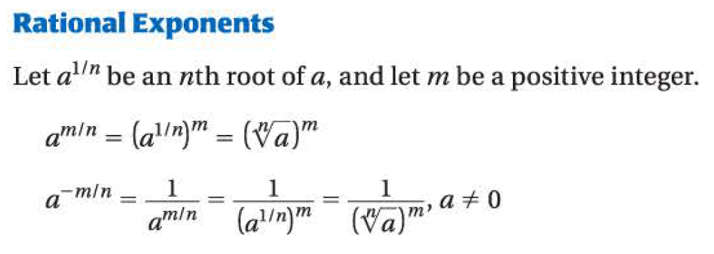
                </figure>
                <p>Before we move on to the next section, we shall notice that, we now
                know two more “operations" we can perform:</p>
                <ul>
                <li><p>to raise (some numbers or expressions) to a power</p></li>
                <li><p>to take the <span class="math inline">\(n\)</span>-th root(s) of
                a number or an expression</p></li>
                </ul>
                <h1 id="apply-properties">Apply Properties</h1>
                <p>Previously, we know the meaning of things like <span
                class="math inline">\(2^3\)</span>. More generally, we know <span
                class="math inline">\(a^m\)</span>, if <span
                class="math inline">\(m\)</span> is an integer. Besides we know several
                properties related to those things. By finishing last section, we now
                know the meaning of things like <span
                class="math inline">\(2^\frac{3}{5}\)</span>. And again, more generally,
                we now know the meaning of <span class="math inline">\(a^m\)</span>, if
                <span class="math inline">\(m\)</span> is a rational number
                <strong>(what is rational number? Put it simply, fraction number with
                integer numerator and denomenator)</strong>.</p>
                <p>But, what about those properties we learned previously? It turns out,
                they are still valid. We list them below for reference:</p>
                <figure data-latex-placement="h">
                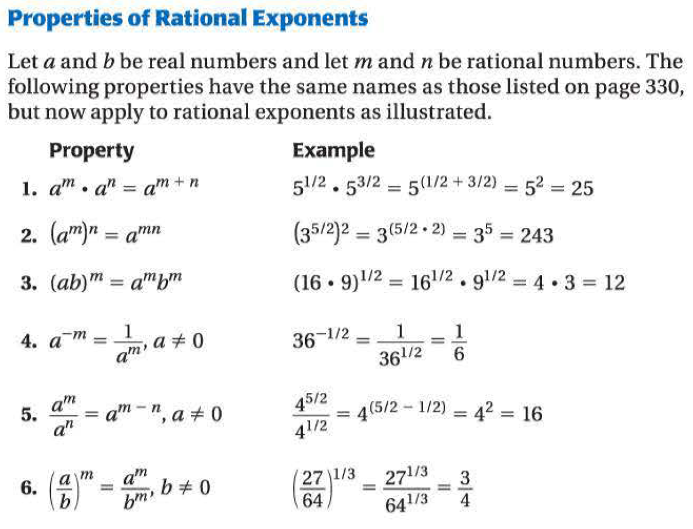
                </figure>
                <p>However, the best way to remember them is not reading them again and
                again, but doing exercises.</p>
                <p>See two special case from those properties (Let <span
                class="math inline">\(n\)</span> be a positive integer): <span
                class="math display">\[\begin{align*}
                        (ab)^\frac{1}{n} &amp;= a^\frac{1}{n}b^\frac{1}{n}&amp; ((ab)^m
                = a^m b^m)\\
                        \left( \frac{a}{b}\right) ^\frac{1}{n} &amp;=
                \frac{a^\frac{1}{n}}{b^\frac{1}{n}} (b\ne 0)&amp; (\left(
                \frac{a}{b}\right) ^m = \frac{a^m}{b^m} b\ne 0)
                \end{align*}\]</span> Notice that from last section, we know: <span
                class="math display">\[a^\frac{1}{n} = \sqrt[n]{a}\]</span> Hence, the
                two equations can be re-written as: <span
                class="math display">\[\begin{gather*}
                        \sqrt[n]{ab} = \sqrt[n]{a}\sqrt[n]{b}\\
                        \sqrt[n]{\frac{a}{b}} = \frac{\sqrt[n]{a}}{\sqrt[n]{b}} (b \ne
                0)
                \end{gather*}\]</span> Above are two <strong>properties of
                radicals</strong>, which we often use during calculation involve
                radicals.</p>
                <p>The last thing for this section is to <strong>simplify
                radicals</strong>. First we need to know the goal, which is:</p>
                <div class="definition*">
                <p><strong>Definition 2</strong>. <strong>(Simplest Form)</strong></p>
                <p>A radical with index <span class="math inline">\(n\)</span> is in
                simplest form, if:</p>
                <ul>
                <li><p>denominator has been rationalized, if it has</p></li>
                <li><p>the radicant has no perfect <span
                class="math inline">\(n\)</span>th powers as factors</p></li>
                </ul>
                </div>
                <p>Feel a little bit familier? That is because we have learnt this in
                1.4. The difference is at that time we only dealing with cases when
                <span class="math inline">\(n=2\)</span>.</p>
                <p>One more definition:</p>
                <div class="definition*">
                <p><strong>Definition 3</strong>. <strong>(Like Radicals)</strong></p>
                <p>Radical expressions with same index and radicand are like
                radicals.</p>
                </div>
                <p>Just like how we treat like terms, we can do: <span
                class="math display">\[\sqrt[5]{2} - 3 \sqrt[5]{2} = -2
                \sqrt[5]{2}\]</span> But, sometimes we need some tricks: <span
                class="math display">\[\begin{align*}
                        \sqrt[3]{54} - \sqrt[3]{2} &amp;=\sqrt[3]{27\cdot
                2}-\sqrt[3]{2}&amp;\\
                        &amp;=\sqrt[3]{27}\sqrt[3]{2}-\sqrt[3]{2}&amp;(\sqrt[n]{ab}=\sqrt[n]{a}\sqrt[n]{b})\\
                        &amp;=3\sqrt[3]{2} - \sqrt[3]{2} &amp;(3^3 = 27)\\
                        &amp;=2\sqrt[3]{2}
                \end{align*}\]</span></p>
                <p>Sometimes, we need to dealing with variables, such as simplify <span
                class="math inline">\(\sqrt[4]{64x^8}\)</span>, the general method is
                the same as numbers. But we shall notice one thing-the sign of the
                variable. For examples:</p>
                <ul>
                <li><p><span class="math inline">\(\sqrt[3]{2^3}=?\)</span></p></li>
                <li><p><span class="math inline">\(\sqrt[3]{(-2)^3}=?\)</span></p></li>
                <li><p><span class="math inline">\(\sqrt[4]{2^4}=?\)</span></p></li>
                <li><p><span class="math inline">\(\sqrt[4]{(-2)^4}=?\)</span></p></li>
                </ul>
                <p>The one should arise our attension is the last one. It should be
                <span class="math inline">\(2\)</span>, not <span
                class="math inline">\(-2\)</span>. We make this more generalized: <span
                class="math display">\[\begin{equation*}
                        \sqrt[n]{x^n}=
                        \begin{cases}
                            x &amp;\text{if \(n\) is an odd number,}\\
                            |x| &amp;\text{if \(n\) is an even number.}
                        \end{cases}
                \end{equation*}\]</span></p>
                <h1 id="function-operations-and-composition-of-functions">Function
                Operations and Composition of Functions</h1>
                <h2 id="domain-of-xm">Domain of <span
                class="math inline">\(x^m\)</span></h2>
                <p>Let’s consider function <span class="math inline">\(f(x) =
                x^m\)</span>, here <span class="math inline">\(m\)</span> can be any
                rational numbers. The domian of this function <span
                class="math inline">\(f(x)\)</span> is depend on the value of <span
                class="math inline">\(m\)</span>:</p>
                <ul>
                <li><p>if <span class="math inline">\(m\)</span> is a positive integer,
                the domian is all the real numbers,</p></li>
                <li><p>if <span class="math inline">\(m\)</span> is a negative integer,
                the domian is all the real numbers except for <span
                class="math inline">\(0\)</span></p></li>
                </ul>
                <p>But what if <span class="math inline">\(m\)</span> is not an
                integer?</p>
                <p><strong>If <span class="math inline">\(m\)</span> is a positive
                rational number (but not integer):</strong></p>
                <p>Because all the rational numbers can be represented by a fraction
                number, assume <span class="math inline">\(m = \frac{k}{t}\)</span>,
                here, both <span class="math inline">\(k, t\)</span> are positive
                integers. Now: <span class="math display">\[x^m =  x^{\frac{k}{t}} =
                \left( x^{\frac{1}{t}} \right) ^k = \left( \sqrt[t]{x} \right)
                ^k\]</span> So, as we can see, the domain of the function is actually
                depending on <span class="math inline">\(t\)</span>:</p>
                <ul>
                <li><p>if <span class="math inline">\(t\)</span> is an odd number, the
                domain is all the real numbers,</p></li>
                <li><p>if <span class="math inline">\(t\)</span> is an even number, the
                domain is all the non-negative numbers (<span class="math inline">\(x
                \ge 0\)</span>).</p></li>
                </ul>
                <p><strong>If <span class="math inline">\(m\)</span> is a negative
                rational number (but not integer):</strong></p>
                <p>This time, we assume that <span class="math inline">\(m =
                -\frac{k}{t}\)</span>, both <span class="math inline">\(k, t\)</span>
                are positive integers. Now: <span class="math display">\[x^m
                =  x^{-\frac{k}{t}} = \frac{1}{x^\frac{k}{t}} = \frac{1}{\left(
                \sqrt[t]{x} \right)^k }\]</span> Hence, we have:</p>
                <ul>
                <li><p>if <span class="math inline">\(t\)</span> is an odd number, the
                domain is all the real numbers except for <span
                class="math inline">\(0\)</span> (<span class="math inline">\(0\)</span>
                can not be denominator),</p></li>
                <li><p>if <span class="math inline">\(t\)</span> is an even number, the
                domian is all the positive numbers (<span class="math inline">\(x &gt;
                0\)</span>).</p></li>
                </ul>
                <h2 id="operations-on-functions">Operations on Functions</h2>
                <p>Just like we can perform <span class="math inline">\(+, -, \times,
                \div\)</span> on numbers, we can perform these operations on functions.
                The process itself is not hard. Just <strong>perform the operations and
                collect like terms</strong>, but we shall know the domain of the newly
                created function. And The rule is:</p>
                <div class="theorem*">
                <p><strong>Theorem 1</strong>. The domain of the new function created by
                performing the four basic operations is the
                <strong>intersection</strong> of two domians of the original functions
                which involved in the operation. Besides, if there are divisions, we
                shall exclude thoese numbers will make the denominator <span
                class="math inline">\(0\)</span>.</p>
                </div>
                <h2 id="composition-of-functions">Composition of Functions</h2>
                <div class="examples*">
                <p><strong>Examples 2</strong>. Consider function <span
                class="math inline">\(f(x)=2x\)</span>, <strong>What is the usage of
                it?</strong> Put it simply, we give the function a value (input), then
                it give us a value (output) back, according to the rules of this
                function: <span class="math display">\[\begin{gather*}
                            2 \text{(input)} \xrightarrow{2x} 4 \text{(output)}\\
                            6 \text{(input)} \xrightarrow{2x} 12 \text{(output)}
                \end{gather*}\]</span></p>
                </div>
                <p>The idea of <strong>composition of funtions</strong> is that, we give
                a number, it first go through one function, so we get a value (just like
                the previous example). Then, the value we get just now becomes a input,
                it go through another function, and we just get output again. See:</p>
                <div class="examples*">
                <p><strong>Examples 3</strong>. Consider two functions-<span
                class="math inline">\(f(x)=2x, g(x)=x^3\)</span>. Let’s try <span
                class="math inline">\(g(f(x))\)</span>. For this one, <strong>the input
                will first go through the inner function, then the outer one</strong>:
                <span class="math display">\[\begin{gather*}
                            2 \xrightarrow{f(x) = 2x} 4 \xrightarrow{g(x)=x^3} 8
                \Rightarrow g(f(2)) = 8\\
                            3 \xrightarrow{f(x)=2x} 6 \xrightarrow{g(x)=x^3} 216
                \Rightarrow g(f(6)) = 216
                \end{gather*}\]</span></p>
                <p>Now we try something interesting-<span
                class="math inline">\(f(g(x))\)</span>: <span
                class="math display">\[\begin{gather*}
                            2 \xrightarrow{g(x) = x^3} 8 \xrightarrow{f(x)=2x} 16
                \Rightarrow f(g(2)) = 16\\
                            3 \xrightarrow{g(x)=x^3} 27 \xrightarrow{f(x)=2x} 54
                \Rightarrow f(g(6)) = 54
                \end{gather*}\]</span></p>
                </div>
                <p>We generalize it:</p>
                <div class="definition*">
                <p><strong>Definition 4</strong>. <strong>(Composition of
                Functions)</strong></p>
                <p><span class="math inline">\(f(g(x))\)</span> is: <span
                class="math display">\[\begin{equation*}
                            x \xrightarrow{g} g(x) \xrightarrow{f} f(g(x))
                \end{equation*}\]</span> And, just as the previous example shows,
                usually <span class="math inline">\(f(g(x)) \ne g(f(x))\)</span>.</p>
                <p>What is the domain of function <span
                class="math inline">\(f(g(x))\)</span>? First, the original input <span
                class="math inline">\(x\)</span> must be in the domain of the inner
                function, which is <span class="math inline">\(g(x)\)</span> in our
                example. Second, the intermedia value, which is <span
                class="math inline">\(g(x)\)</span> must be in the domain of the outer
                function, which is <span class="math inline">\(f(x)\)</span>.</p>
                </div>
                <p>Finally, what if we were asked to find the expression of the outcome
                of the composition? <strong>substituted <span
                class="math inline">\(x\)</span> in the outer function to the expression
                of the inner function</strong>. See:</p>
                <div class="examples*">
                <p><strong>Examples 4</strong>. <span class="math inline">\(f(x) = x^2,
                g(x) = 3x\)</span>, what is <span
                class="math inline">\(f(g(x))\)</span>? <span
                class="math display">\[\begin{equation*}
                            f(g(x)) = \left( g(x) \right)^2 = (3x)^2 = 9 x^2
                \end{equation*}\]</span></p>
                </div>
                <h1 id="inverse-functions">Inverse Functions</h1>
                <p>Reconsider the function <span class="math inline">\(f(x)=2x\)</span>:
                <span class="math display">\[\begin{gather*}
                        2 \text{(input)} \xrightarrow{2x} 4 \text{(output)}\\
                        6 \text{(input)} \xrightarrow{2x} 12 \text{(output)}
                \end{gather*}\]</span> <strong>We have the inputs, and we want to find
                the outputs.</strong> Now, let’s see the process in the graph of the
                function. We just use the <span
                class="math inline">\(x\)</span>-coordinate to find the <span
                class="math inline">\(y\)</span>-coordinate of points on the graph of
                the function.</p>
                <figure data-latex-placement="h">
                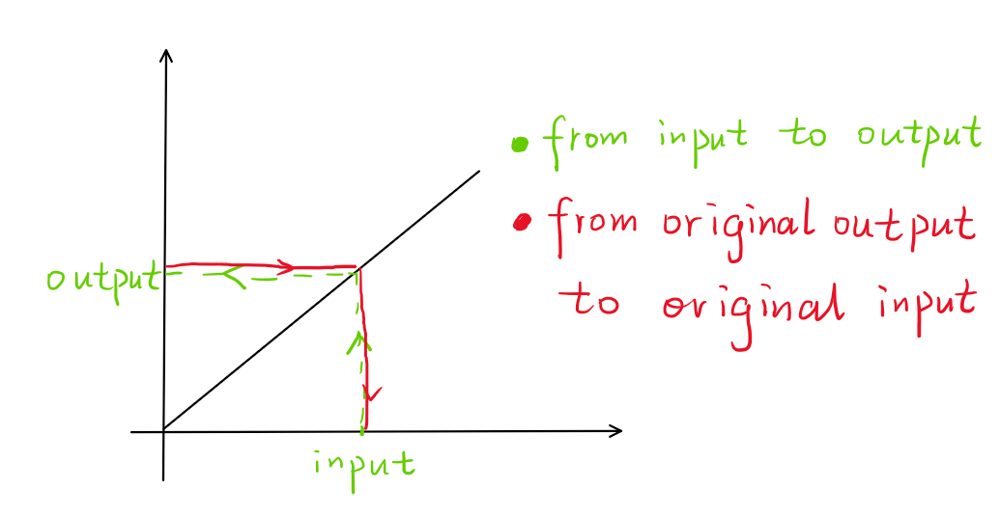
                </figure>
                <p>Now, we think this reversely: <strong>what if we have the outputs,
                but want to find the input associated with them</strong>? We can also
                see such a process in the graph above.</p>
                <p>The key thing here is that, the latter one is also a function-you
                have one thing, and by some rules, you find the only associated thing of
                it. Actually, the latter one is called the inverse function of <span
                class="math inline">\(f\)</span>, denoted as <span
                class="math inline">\(f^{-1}\)</span>.</p>
                <p>How can we find the inverse function of a specific function? The
                process is <strong>solve the input variable, usually <span
                class="math inline">\(x\)</span> in terms of the output variable,
                usually <span class="math inline">\(y\)</span></strong>.</p>
                <p><strong>What can go wrong?</strong> Let’s consider function <span
                class="math inline">\(f(x)=x^2\)</span>, we have: <span
                class="math display">\[\begin{gather*}
                        2 (\text{input}) \xrightarrow{x^2} 4 (\text{output})\\
                        -2 (\text{input}) \xrightarrow{x^2} 4 (\text{output})
                \end{gather*}\]</span> Now, if we want its inverse function, that is, to
                be specific, if we know the output, <span
                class="math inline">\(4\)</span> here, and want to know the input, which
                one shall we choose? So we can see:</p>
                <figure data-latex-placement="h">
                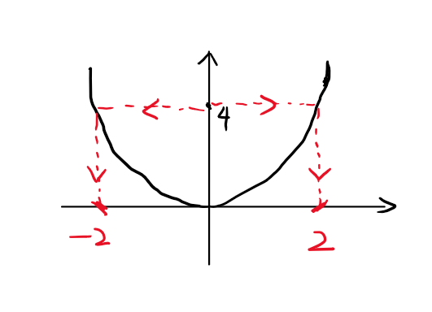
                </figure>
                <div class="theorem*">
                <p><strong>Theorem 2</strong>. <strong>Not all functions have inverse
                functions.</strong> And if we want to know if a function has its inverse
                function or not, we can apply a technique called <strong>Horizontal Line
                Test</strong>.</p>
                </div>
                <p>One more thing is that, we are accustomed to see the horizontal axis
                as the axis of the input and the vertical axis as the axis of the
                output. In other words, we are accustomed to use <span
                class="math inline">\(x\)</span> as the input, and <span
                class="math inline">\(y\)</span> as output. So, usually the process of
                find the inverse function of a function is:</p>
                <div class="theorem*">
                <p><strong>Theorem 3</strong>. <strong>(Finding Inverse
                Function)</strong></p>
                <p>Steps:</p>
                <ul>
                <li><p>Solve <span class="math inline">\(x\)</span> in terms of <span
                class="math inline">\(y\)</span> (This let us find the inverse
                function)</p></li>
                <li><p>interchange <span class="math inline">\(x\)</span> and <span
                class="math inline">\(y\)</span> in the expression you get above (This
                satisfy our habit)</p></li>
                </ul>
                </div>
                <p>One thing we shall know:</p>
                <div class="theorem*">
                <p><strong>Theorem 4</strong>. <strong>(About Symmetry)</strong></p>
                <p>The graphs of the function and its inverse function are symmetric
                about the line <span class="math inline">\(y=x\)</span>. (After the
                interchange.)</p>
                </div>
                <p>Finally, we give the formal defintion of inverse function:</p>
                <div class="definition*">
                <p><strong>Definition 5</strong>. <strong>(Inverse
                Function)</strong></p>
                <p>Functions <span class="math inline">\(f\)</span> and <span
                class="math inline">\(g\)</span> are inverse function of each other
                provided: <span class="math display">\[\begin{gather*}
                            f(g(x)) = x\\
                            g(f(x)) = x
                \end{gather*}\]</span> We denote the inverse function, say for <span
                class="math inline">\(f(x)\)</span> which is <span
                class="math inline">\(g\)</span>, as <span
                class="math inline">\(f^{-1}\)</span>. The domain of the inverse
                function is the range of the original function, and the range of the
                inverse function is the domian of the original function.</p>
                </div>
                <p>we can use this <strong>to verify if two functions are inverse
                functions to each other or not</strong>.</p>
                <h1 id="graph-square-root-and-cube-root-functions">Graph Square Root and
                Cube Root Functions</h1>
                <p>Our ultimate goal or this section is to graph <span
                class="math inline">\(f(x) = a\sqrt{x-h}+k\)</span> and <span
                class="math inline">\(f(x) = a\sqrt[3]{x-k} + k\)</span>. Don’t be
                scared, we do it step by step.</p>
                <h2 id="from-sqrtx-to-asqrtx-from-sqrt3x-to-asqrt3x">From <span
                class="math inline">\(\sqrt{x}\)</span> to <span
                class="math inline">\(a\sqrt{x}\)</span> &amp; From <span
                class="math inline">\(\sqrt[3]{x}\)</span> to <span
                class="math inline">\(a\sqrt[3]{x}\)</span></h2>
                <p><strong>Review: Transformation of functions</strong></p>
                <ul>
                <li><p><span class="math inline">\(f(x) \to af(x) (a &gt; 0)\)</span>:
                vertical stretch, scale factor <span
                class="math inline">\(a\)</span>,</p></li>
                <li><p><span class="math inline">\(f(x) \to -f(x)\)</span>: reflection
                about <span class="math inline">\(y\)</span>-axis.</p></li>
                </ul>
                <p>See the following two pictures:</p>
                <figure data-latex-placement="h">
                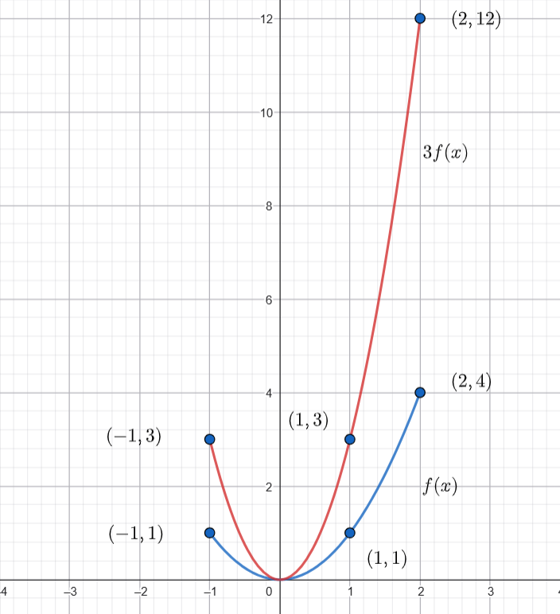
                </figure>
                <figure data-latex-placement="h">
                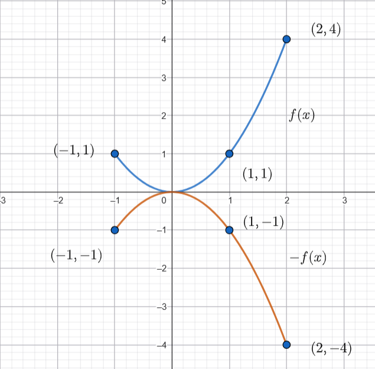
                </figure>
                <p>We use two examples to illustate how to apply above knowledge to
                graph those functions:</p>
                <div class="examples*">
                <p><strong>Examples 5</strong>. Graph <span
                class="math inline">\(3\sqrt[3]{x}\)</span>.</p>
                <p><strong>Solutions:</strong></p>
                <p><strong>Step 1: Figure out the transformation(s) to get the function
                in the question.</strong></p>
                <p>if we let <span class="math inline">\(f(x) = \sqrt[3]{x}\)</span>,
                then we can find that: <span class="math display">\[3\sqrt[3]{x} =
                3f(x)\]</span> Thus, the transformation we need to get <span
                class="math inline">\(3\sqrt[3]{x}\)</span> from <span
                class="math inline">\(\sqrt[3]{x}\)</span> is just a vertical stretch,
                and the scale factor is <span class="math inline">\(3\)</span>.</p>
                <p><strong>Step 2: Figure out what happend geometrically to the graph of
                the origin function.</strong></p>
                <p><strong>vertical stretch, and the scale factor is <span
                class="math inline">\(3\)</span></strong> just means: for each point on
                the graph of the original function, the <span
                class="math inline">\(x\)</span>-coordinates stay the same, but the
                <span class="math inline">\(y\)</span>-coordinates associated with the
                same <span class="math inline">\(x\)</span>-value become <span
                class="math inline">\(3\)</span> times the original value.</p>
                <p><strong>Step3: Based on step 2 and the graph of the original
                function, graph the curve in the question.</strong></p>
                <figure data-latex-placement="h">
                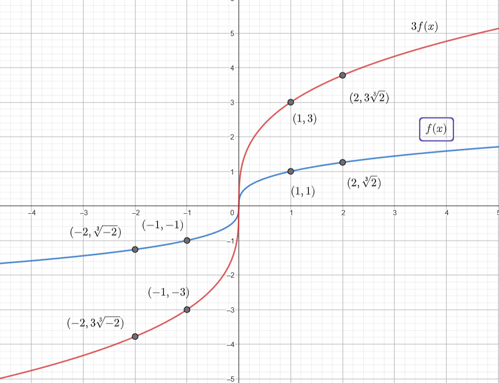
                </figure>
                </div>
                <div class="examples*">
                <p><strong>Examples 6</strong>. Graph <span
                class="math inline">\(-2\sqrt[3]{x}\)</span>.</p>
                <p><strong>Solution:</strong></p>
                <p><strong>Step 1: Figure out the transformation(s) to get the function
                in the question.</strong></p>
                <p>For this question, things are a little bit complicated because there
                are two transformations involved. But not hard. Just assume <span
                class="math inline">\(f(x) = \sqrt[3]{x}\)</span>, we first notice that:
                <span class="math display">\[2\sqrt[3]{x} = 2f(x)\]</span> Thus, the
                transformation to get <span class="math inline">\(\sqrt[3]{x}\)</span>
                to <span class="math inline">\(2\sqrt[3]{x}\)</span> is just a vertical
                stretch, scale factor 2. <strong>But, that not the end. because the
                ultimate goal is <span
                class="math inline">\(-2\sqrt[3]{x}\)</span></strong>. We assume the
                function we just get to be <span class="math inline">\(g(x)\)</span>
                i.e. <span class="math inline">\(g(x) = 2\sqrt[3]{x}\)</span>, then we
                can find: <span class="math display">\[-2\sqrt[3]{x} = -g(x)\]</span>
                Thus, the transformation to get <span
                class="math inline">\(2\sqrt[3]{x}\)</span> to <span
                class="math inline">\(-2\sqrt[3]{x}\)</span> is a reflection about <span
                class="math inline">\(y\)</span>-axis.</p>
                <p>So there are two transformations to get <span
                class="math inline">\(-2\sqrt[3]{x}\)</span> from <span
                class="math inline">\(\sqrt[3]{x}\)</span>: <strong>first</strong>, a
                vertical stretch by a scale factor <span
                class="math inline">\(2\)</span>, then a reflection about <span
                class="math inline">\(y\)</span>-axis.</p>
                <p><strong>Step 2: Figure out what happend geometrically to the graph of
                the origin function.</strong></p>
                <p>For the first transformation, the <span
                class="math inline">\(y\)</span>-coordinate becomes <span
                class="math inline">\(2\)</span> times the orginal one. Then, for the
                second one, we just need to flip the graph over <span
                class="math inline">\(y\)</span>-axis.</p>
                <p><strong>Step3: Based on step 2 and the graph of the original
                function, graph the curve in the question.</strong></p>
                <figure data-latex-placement="h">
                
                </figure>
                </div>
                <p>Final thing before we leave: what about the domain and range of the
                new function? The universal conclusion will be:</p>
                <ul>
                <li><p>for <span class="math inline">\(f(x)\to af(x)
                (a&gt;0)\)</span>:</p>
                <ul>
                <li><p>domian stay the same</p></li>
                <li><p>for range: <span class="math inline">\(\{y_1, y_2, y_3, \dots\}
                \to \{ay_1, ay_2, ay_3, \dots\}\)</span></p></li>
                </ul></li>
                <li><p>for <span class="math inline">\(f(x) \to - f(x)\)</span>:</p>
                <ul>
                <li><p>domian stay the same</p></li>
                <li><p>for range: <span class="math inline">\(\{y_1, y_2, y_3, \dots\}
                \to \{-y_1, -y_2, -y_3, \dots\}\)</span></p></li>
                </ul></li>
                </ul>
                <p>Luckily, for <span class="math inline">\(a\sqrt{x}, a\sqrt[3]{x}
                (a&gt;0)\)</span>, both domain and range stay the same. For <span
                class="math inline">\(-a\sqrt{x}, -a\sqrt[3]{x}\)</span>, the domian
                stay the same, while range “turn negative".</p>
                <h2 id="from-asqrtx-to-asqrtx-kk-from-asqrt3x-to-asqrt3x-hk">From <span
                class="math inline">\(a\sqrt{x} \to a\sqrt{x-k}+k\)</span>, From <span
                class="math inline">\(a\sqrt[3]{x} \to a\sqrt[3]{x-h}+k\)</span></h2>
                <p><strong>Review:</strong></p>
                <ul>
                <li><p><span class="math inline">\(f(x) \to f(x-h)\)</span></p>
                <ul>
                <li><p>if <span class="math inline">\(h&gt;0\)</span>, translate to the
                <strong>right</strong> by <span class="math inline">\(h\)</span>
                units,</p></li>
                <li><p>if <span class="math inline">\(h&lt;0\)</span>, translate to the
                <strong>left</strong> by <span class="math inline">\(-h\)</span>
                units,</p></li>
                </ul></li>
                <li><p><span class="math inline">\(f(x) \to f(x)+k\)</span></p>
                <ul>
                <li><p>if <span class="math inline">\(k&gt;0\)</span>, translate
                <strong>upward</strong> by <span class="math inline">\(k\)</span>
                units,</p></li>
                <li><p>if <span class="math inline">\(k&lt;0\)</span>, translate
                <strong>downward</strong> by <span class="math inline">\(-k\)</span>
                units.</p></li>
                </ul></li>
                </ul>
                <p>See the graphs:</p>
                <figure data-latex-placement="h">
                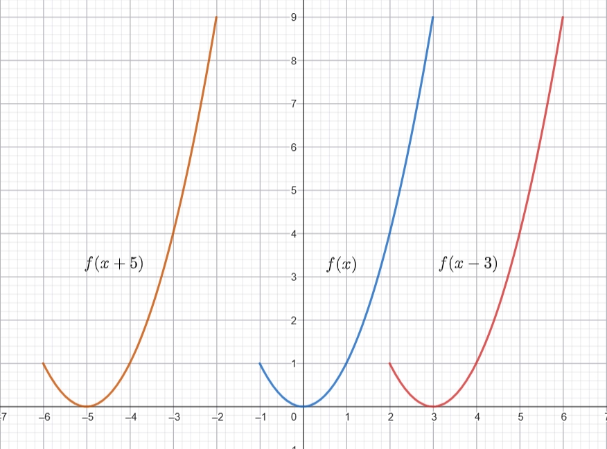
                </figure>
                <figure data-latex-placement="h">
                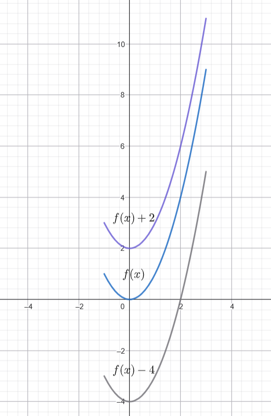
                </figure>
                <p>We also use two examples to illustrate how to graph those
                functions:</p>
                <div class="examples*">
                <p><strong>Examples 7</strong>. Graph <span
                class="math inline">\(\frac{1}{2}\sqrt{x-3}-1\)</span></p>
                <p><strong>Solution:</strong></p>
                <p><strong>Step 1:</strong> By knowledge we leant from last part, we can
                graph <span class="math inline">\(\frac{1}{2}\sqrt{x}\)</span>. (More
                generally, we can graph <span
                class="math inline">\(a\sqrt{x}\)</span>)</p>
                <p><strong>Step 2:</strong> We go to graph <span
                class="math inline">\(\frac{1}{2}\sqrt{x-3}\)</span>. (More generally,
                we can graph <span class="math inline">\(a\sqrt{x-h}\)</span>)
                <strong>The transformation involves here is just horizontal
                translation</strong>.</p>
                <p>Let <span class="math inline">\(f(x) = \frac{1}{2}\sqrt{x}\)</span>,
                then we have <span class="math inline">\(\frac{1}{2}\sqrt{x-3} =
                f(x-3)\)</span>. So just move the graph to the right by <span
                class="math inline">\(3\)</span> units.</p>
                <p><strong>Step 3:</strong> We go to graph <span
                class="math inline">\(\frac{1}{2}\sqrt{x-3}-1\)</span>. (More generally,
                we graph <span class="math inline">\(a\sqrt{x-h}+k\)</span>) <strong>The
                transformation involves here is just vertical translation</strong>.</p>
                <p>Let <span class="math inline">\(g(x) =
                \frac{1}{2}\sqrt{x-3}\)</span>, then we have <span
                class="math inline">\(\frac{1}{2}\sqrt{x-3}-1 = g(x) - 1\)</span>. So
                just move the graph downward by 1 unit.</p>
                <figure data-latex-placement="h">
                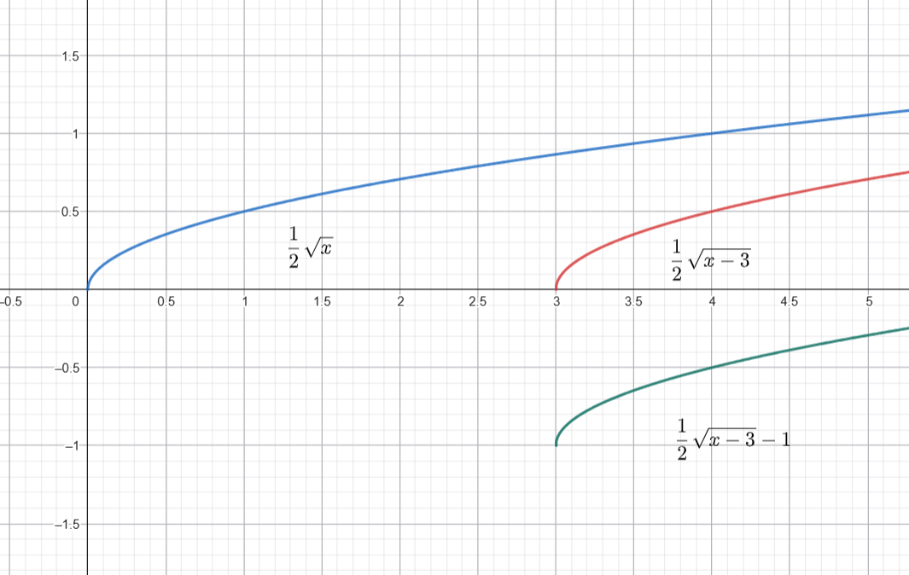
                </figure>
                </div>
                <div class="examples*">
                <p><strong>Examples 8</strong>. Graph <span
                class="math inline">\(-2\sqrt[3]{x+2}-3\)</span></p>
                <p><strong>Solution:</strong></p>
                <p><strong>Step 1:</strong> By knowledge we leant from last part, we can
                graph <span class="math inline">\(-2\sqrt[3]{x}\)</span>. (More
                generally, we can graph <span
                class="math inline">\(a\sqrt[3]{x}\)</span>)</p>
                <p><strong>Step 2:</strong> We go to graph <span
                class="math inline">\(-2\sqrt[3]{x+2}\)</span>. (More generally, we can
                graph <span class="math inline">\(a\sqrt[3]{x-h}\)</span>) <strong>The
                transformation involves here is just horizontal
                translation</strong>.</p>
                <p>Let <span class="math inline">\(f(x) = -2\sqrt[3]{x}\)</span>, then
                we have <span class="math inline">\(-2\sqrt[3]{x+2} = f(x+2)\)</span>.
                So just move the graph to the left by 2 units.</p>
                <p><strong>Step 3:</strong> We go to graph <span
                class="math inline">\(-2\sqrt[3]{x+2}-3\)</span>. (More generally, we
                graph <span class="math inline">\(a\sqrt[3]{x-h}+k\)</span>) <strong>The
                transformation involves here is just vertical translation</strong>.</p>
                <p>Let <span class="math inline">\(g(x) = -2 \sqrt[3]{x+2}\)</span>,
                then we have <span class="math inline">\(-2 \sqrt[3]{x+2} - 3 = g(x) -
                3\)</span>. So just move the graph downward by 3 units.</p>
                <figure data-latex-placement="h">
                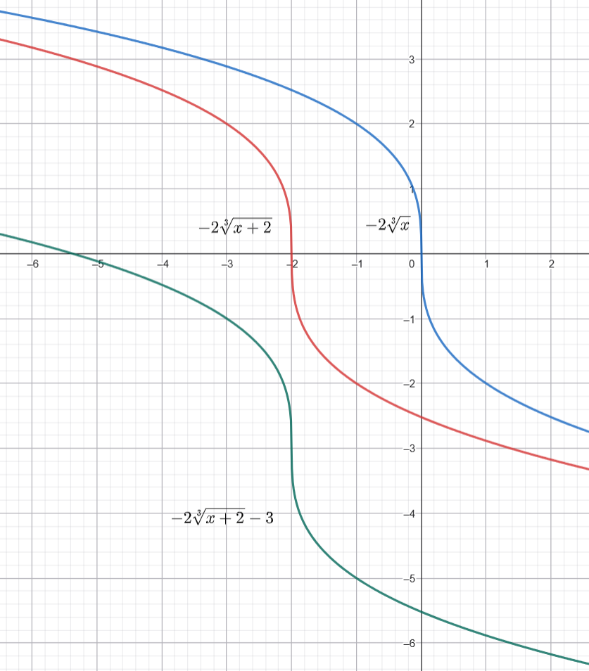
                </figure>
                </div>
                <h1 id="solve-radical-equations">Solve Radical Equations</h1>
                <p>For the final section of this chapter, we all need to do is
                <strong>eliminate the radical sign</strong> or <strong>made rational
                exponents’ index 1</strong>. We illustrate this be examples:</p>
                <div class="examples*">
                <p><strong>Examples 9</strong>. Solve <span
                class="math inline">\(\sqrt[3]{x} - 9 = -1\)</span></p>
                <p><strong>Solution:</strong></p>
                <p><strong>Step 1: Put the thing within the radical sign alone</strong>
                <span class="math display">\[\begin{gather*}
                            \sqrt[3]{x} - 9 = -1\\
                            \sqrt[3]{x} = -1 + 9 = 8\\
                            \Rightarrow \sqrt[3]{x} = 8
                \end{gather*}\]</span></p>
                <p><strong>Step 2: eliminate the radical sign</strong> <span
                class="math display">\[\begin{align*}
                            \sqrt[3]{x} &amp;= 8 &amp; \\
                            (\sqrt[3]{x})^3 &amp;= 8^3 &amp;\text{if it is \(n\)-th
                root, we just raise both side to \(n\)-th power}\\
                            x &amp;= 512 &amp;\text{By doing so, we can just eliminate
                the radical sign}
                \end{align*}\]</span>0◻</p>
                </div>
                <div class="examples*">
                <p><strong>Examples 10</strong>. Solve <span
                class="math inline">\((x+2)^{2/3} + 3 = 7\)</span></p>
                <p><strong>Solution:</strong></p>
                <p><strong>Step 1: Put the thing with rational exponent alone</strong>
                <span class="math display">\[\begin{gather*}
                            (x+2)^{2/3} + 3 = 7\\
                            (x+2)^{2/3} = 7 - 3 = 4\\
                            \Rightarrow (x+2)^{2/3} = 4
                \end{gather*}\]</span></p>
                <p><strong>Step 2: make the rational exponent to be <span
                class="math inline">\(1\)</span></strong> <span
                class="math display">\[\begin{align*}
                            (x+2)^{2/3} &amp;= 4 &amp; \\
                            ((x+2)^{2/3})^{3/2} &amp; = 4^{3/2} &amp;\text{We use the
                property \((a^m)^n = a^{mn}\)}\\
                            x+2 = 4^{3/2} &amp;= (4^{1/2})^3 = (\sqrt{4})^3 = 2^3 = 8
                &amp;\text{how we calculate \(4^{3/2}\)}\\
                            x + 2 &amp;= 8
                \end{align*}\]</span></p>
                <p><strong>Step 3: do the remaining algebra</strong> <span
                class="math display">\[\begin{gather*}
                            x + 2 = 8\\
                            x = 8 - 2 = 6\\
                            \Rightarrow x = 6
                \end{gather*}\]</span>0◻</p>
                </div>
                <p>Sometimes, we will <strong>introduce extraneous solutions</strong>
                when we raise power of the both sides of an equation. But, don’t worry,
                just <strong>check you answer by substitude it back to the original
                equation to see if it is a solution or not</strong>. Again, we see this
                in a example:</p>
                <div class="examples*">
                <p><strong>Examples 11</strong>. Solve <span class="math inline">\(x + 1
                = \sqrt{7x + 15}\)</span></p>
                <p><strong>Solution:</strong></p>
                <p>We just follow the steps of our previous examples:</p>
                <p><strong>Step 1: raise each side of the equation to the power of
                2</strong> (we don’t need to put the thing with radical sign alone,
                because it already is) <span class="math display">\[\begin{gather*}
                            x + 1 = \sqrt{7x + 15}\\
                            (x + 1)^2 = (\sqrt{7x + 15})^2\\
                            x^2 + 2x + 1 = 7x + 15
                \end{gather*}\]</span></p>
                <p><strong>Step 2: do the remaining algebra</strong> <span
                class="math display">\[\begin{gather*}
                            x^2 + 2x + 1 = 7x + 15\\
                            x^2 + 2x + 1 - 15 = 7x\\
                            x^2 + 2x -14 = 7x\\
                            x^2 + 2x - 7x - 14 = 0\\
                            x^2 - 5x -14 = 0
                \end{gather*}\]</span></p>
                <p>The result is a quadratic equation, so we can solve it by formula or
                factoring. Here, factoring might be easier: <span
                class="math display">\[\begin{gather*}
                            x^2 - 5x - 14 = 0\\
                            (x+2)(x-7) = 0
                \end{gather*}\]</span> Hence we get: <span class="math display">\[x = -2
                \quad\text{or}\quad x = 7\]</span></p>
                <p><strong>Step 3: Check for the solutions</strong></p>
                <p>if <span class="math inline">\(x = -2\)</span>, we substitude it back
                to the original equation, then we will get: <span
                class="math display">\[\begin{gather*}
                            -2 + 1 = \sqrt{7\times (-2) + 15}\\
                            -1 = \sqrt{1}\\
                            -1 = 1
                \end{gather*}\]</span> As you can see, the equation can not be hold if
                <span class="math inline">\(x = -2\)</span>. So this is a extraneous
                solution.</p>
                <p>if <span class="math inline">\(x = 7\)</span>: <span
                class="math display">\[\begin{gather}
                            7 + 1 = \sqrt{7\times 7 + 15}\\
                            8 = \sqrt{49 + 15}\\
                            8 = \sqrt{64}\\
                            8 = 8
                \end{gather}\]</span> As we can see, <span
                class="math inline">\(7\)</span> can make the equation hold, so it is a
                solution.</p>
                <p>So, the conclustion is: the only solution is <span
                class="math inline">\(7\)</span></p>
                </div>
                <p>The final thing about solving these equations is that, sometimes you
                might raise the power twice (or even more times), because the equations
                are a little bit complicated:</p>
                <div class="examples*">
                <p><strong>Examples 12</strong>. Solve <span
                class="math inline">\(\sqrt{x+2} +1 = \sqrt{3-x}\)</span></p>
                <p><strong>Solution:</strong></p>
                <p><strong>Step 1: raise both sides of the equation to the power of
                <span class="math inline">\(2\)</span></strong></p>
                <p>Here, why we don’t put the things within radical sign alone, like:
                <span class="math display">\[\sqrt{x + 2} - \sqrt{3 - x} = -1\]</span>
                Actually we can, and get the answer, but it will make the amount of
                calculation more heavy.</p>
                <p><span class="math display">\[\begin{gather*}
                            (\sqrt{x + 2} - 1)^2 = (\sqrt{3 - x})^2\\
                            x + 2 -2\sqrt{x+2} + 1 = 3 - x\\
                            x + 3 - 2\sqrt{x+2} = 3 - x
                \end{gather*}\]</span> As you can see, there are still radical sign, so
                we need to square it agian, but before that:</p>
                <p><strong>Step 2: put the thing within the radical sign alone</strong>
                <span class="math display">\[\begin{gather*}
                            x + 3 - 2\sqrt{x+2} = 3 - x\\
                            x + 3 - 3 - 2\sqrt{x+2} = -x\\
                            x - 2\sqrt{x+2} = -x\\
                            x + x - 2\sqrt{x+ 2} = 0\\
                            2x -2\sqrt{x+2} = 0\\
                            2x = 2\sqrt{x+2}\\
                            x = \sqrt{x+2}
                \end{gather*}\]</span></p>
                <p><strong>Step 3: raise both sides of the equation to the power of
                2</strong> <span class="math display">\[\begin{gather*}
                            x^2 = (\sqrt{x+2})^2\\
                            x^2 = x+2\\
                            x^2 - x - 2 = 0
                \end{gather*}\]</span> A quadratic equation, we solve it by factoring:
                <span class="math display">\[\begin{gather*}
                            x^2 - x -2 = 0\\
                            (x+1)(x-2)=0
                \end{gather*}\]</span> So we get: <span class="math display">\[x = -1
                \quad \text{or} \quad x = 2\]</span></p>
                <p><strong>However, don’t forget to check the solutions</strong></p>
                <p><strong>Step 4: Check for the solutions</strong></p>
                <p>If <span class="math inline">\(x = -1\)</span>: <span
                class="math display">\[\begin{gather*}
                            \sqrt{-1 + 2} + 1 = \sqrt{3- (-1)}\\
                            \sqrt{1} + 1 = \sqrt{4}\\
                            2 = 2
                \end{gather*}\]</span> Holds, so it is a solution.</p>
                <p>If <span class="math inline">\(x = 2\)</span>: <span
                class="math display">\[\begin{gather*}
                            \sqrt{2 +2} + 1 = \sqrt{3 -2}\\
                            \sqrt{4} + 1 = \sqrt{1}\\
                            2 + 1 = 1\\
                            3 = 1
                \end{gather*}\]</span> It is not right, so <span class="math inline">\(x
                = 2\)</span> is an extraneous solution.</p>
                <p>So the conclusion is the only solution is <span
                class="math inline">\(x = -1\)</span></p>
                </div>
            </main>

            <aside class="sidebar-secondary">
                <div class="toc-title"><i class="fa-solid fa-list"></i> Contents</div>
                <nav aria-label="On this page" id="pageToc"></nav>
            </aside>

            <button class="btn btn-primary rounded-pill" id="backToTop">
            <i class="fa-solid fa-arrow-up"></i> Back to top
            </button>
            <script src="https://cdn.jsdelivr.net/npm/bootstrap@5.3.3/dist/js/bootstrap.bundle.min.js"></script>
        </div>
    </body>
</html>